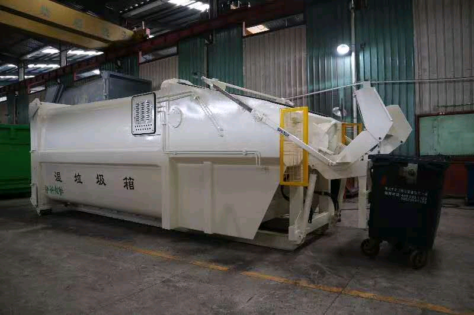
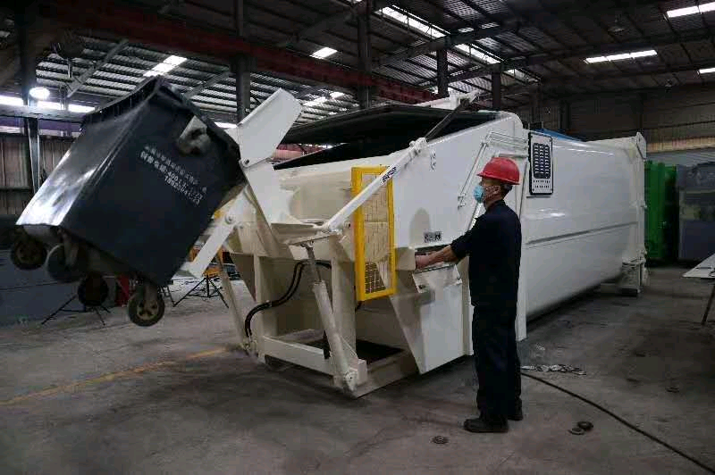
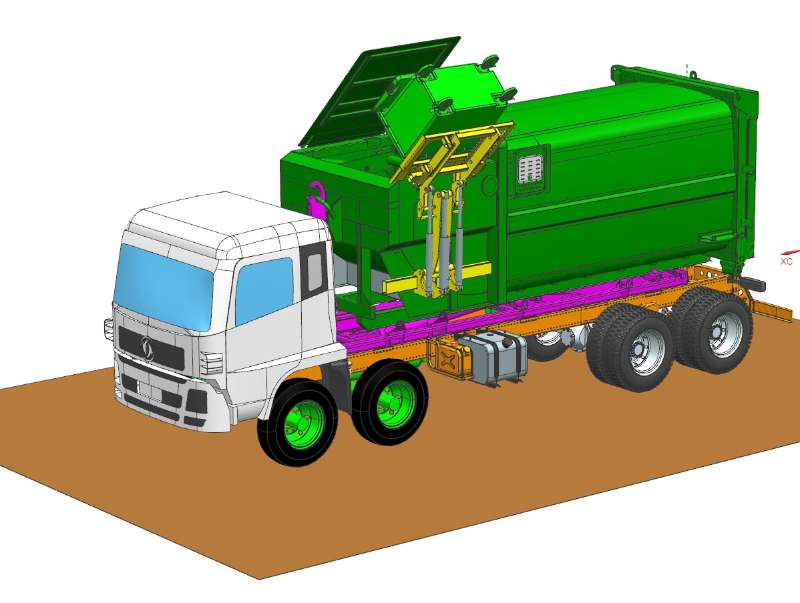
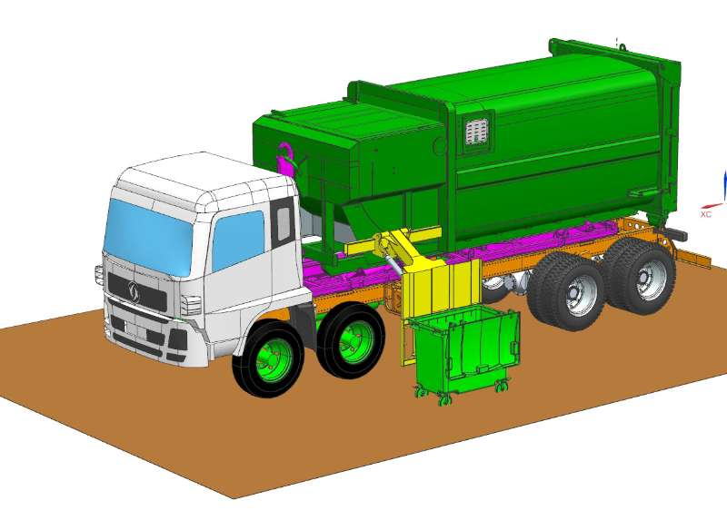
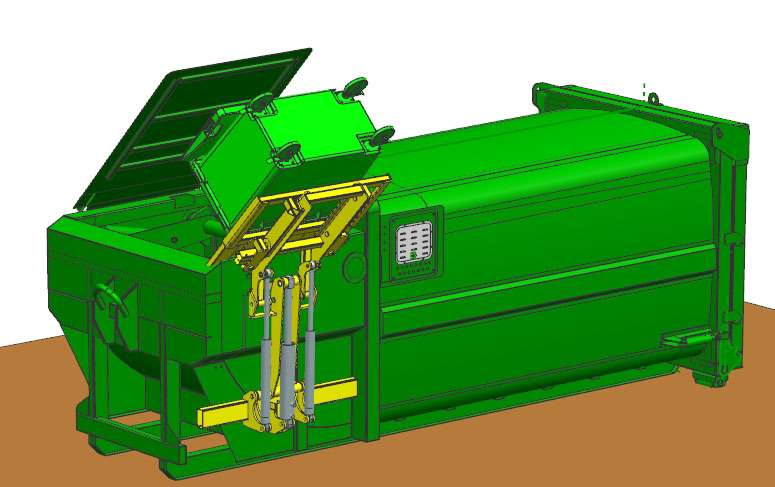
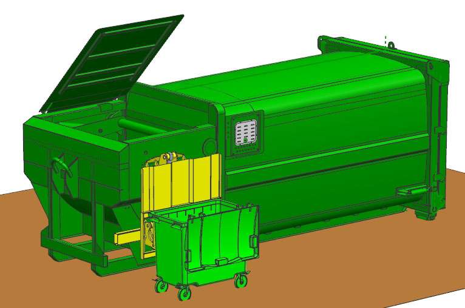

18立方移動式濕垃圾壓縮箱技術參數及產品說明






主要技術參數
| 項目 | 參數 |
|---|---|
| 總長度 | 6250 mm |
| 總寬度 | 2500 mm |
| 總高度 | 2500 mm |
| 箱體總容積 | 18 m³ |
| 有效裝載容積 | 約14 m³ |
| 自重 | 5.6 t |
| 電動機功率 | 7.5 kW |
| 適用垃圾桶型號 | 120 L/240 L |
| 上料機構 | 重型壓縮箱前端，可同時翻轉兩個240 L垃圾桶或一個660 L標準垃圾桶 |
| 上料迴圈時間 | 25 s |
| 高位壓縮迴圈時間 | 32 s |
| 上料機構提料能力 | 600 kg |
| 額定工作壓力 | 18 MPa |
| 外接電源電壓 | 380 V |
| 作業噪音 | 68 dB(A) |
| 匹配運輸車輛 | 適配總品質25噸及以上的車廂可卸式垃圾車，勾心高度為1570±5 mm，勾臂後滾輪水平距離5700 mm |
| 後門啟閉方式 | 採用底盤動力，快換接頭插接控制液壓油缸啟閉 |
| 操作方式 | 箱體電控部分配有4.3寸液晶屏，使用箱體面板按鈕和無線遙控器控制壓縮箱工作 |
主要技術特點
| 適配車輛： | 該壓縮箱設計適配總品質25噸及以上的車廂可卸式垃圾車，滿足各種大規模垃圾處理需求。 |
| 優質材料： | 箱體弧形方罐體採用Q355鋼材，邊板和頂板厚度為4 mm，底板厚度為5 mm，具有優異的抗壓和耐磨性能。 |
| 高效上料機構： | 配置可同時翻轉兩個240 L垃圾桶或一個660 L標準垃圾桶的提料翻轉機構，提升能力達600 kg以上，滿足高效作業需求。 |
| 防止二次污染： | 設計嚴謹，在運輸過程中不會發生滴漏和撒落現象，杜絕二次污染。 |
| 液壓系統控制： | 配備強制風冷器，能有效控制液壓系統溫度，即使在高溫季節也可進行大負荷連續作業。 |
| 智能電控系統： | 配備總電源相序轉換開關和全箱緊急停止按鈕，電控系統顯示提料機構提升次數，並在斷電後自動清零。 |
| 高位壓縮機構： | 箱內設置高位壓縮機構，提高垃圾壓縮效率和裝載容量。 |
| 液位觀察窗： | 配備箱體內液位觀察窗，方便操作人員實時監控箱內狀態。 |
| 駕駛室操作： | 後門的啟閉、鎖緊及垃圾傾卸可在駕駛室內完成，操作簡便。 |
| 智慧操作： | 採用PLC控制，具備運行自我診斷功能，實現一鍵式啟動智慧操作，確保設備運行的可靠性和穩定性。 |
PLC控制系統
| 高可靠性： | PLC設計專為工業環境，具備高抗干擾能力，能夠在惡劣環境下穩定運行。 |
| 靈活性強： | 可根據不同的應用需求進行編程和配置，適用於多種自動化控制場景。 |
| 編程簡便： | 使用梯形圖、功能塊圖等圖形化編程語言，易於理解和操作。 |
| 可擴展性： | 支持模塊化設計，通過添加擴展模塊來增加功能，如I/O模塊、通信模塊等。 |
| 高效控制： | 實時處理速度快，適合需要高響應速度的控制應用。 |
在18立方移動式濕垃圾壓縮箱中，PLC控制系統能夠提供智能操作、自我診斷、一鍵式啟動等功能，提高設備運行的可靠性和效率。
結論
18立方移動式濕垃圾壓縮箱以其卓越的技術性能和可靠的設計，成為城市環保和垃圾處理的不二之選。該設備能有效提高垃圾處理效率，降低運營成本，並確保環境清潔，是現代化垃圾處理的理想設備。